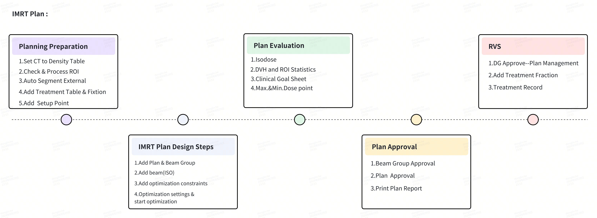
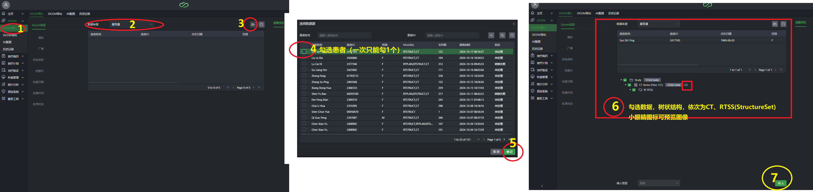
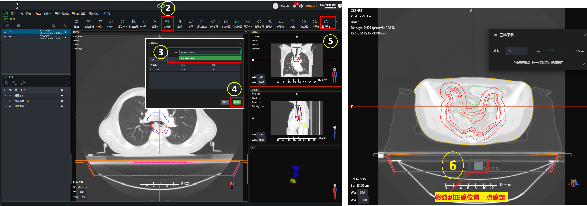
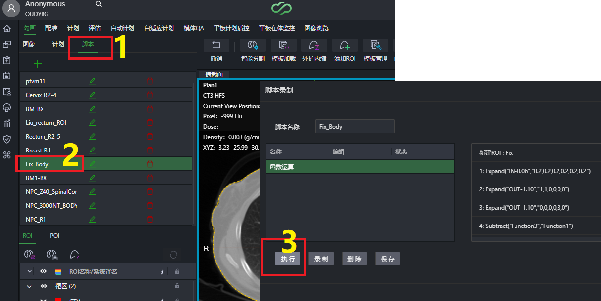
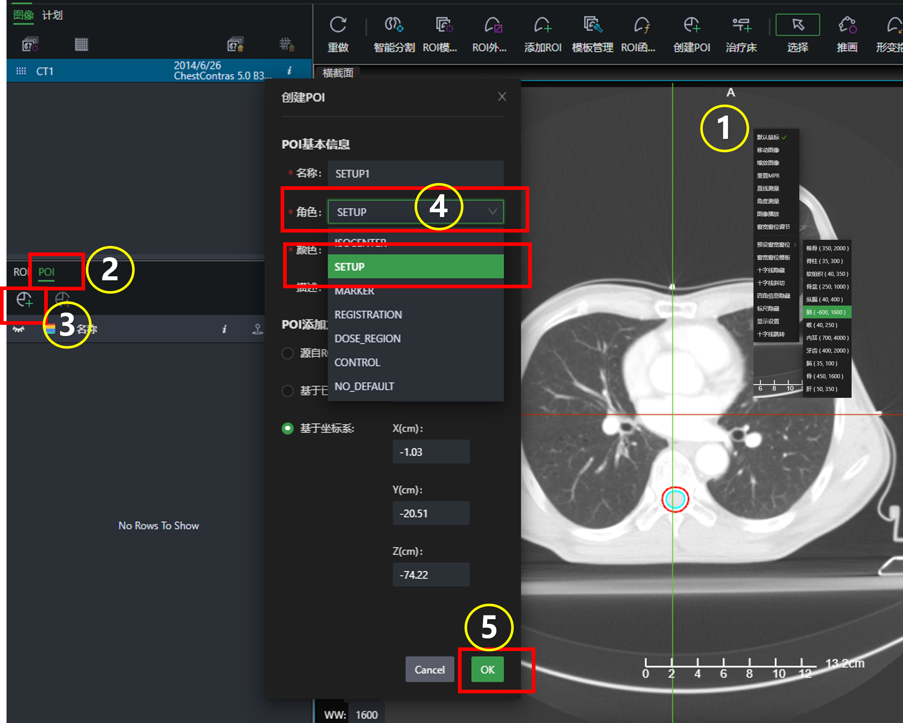
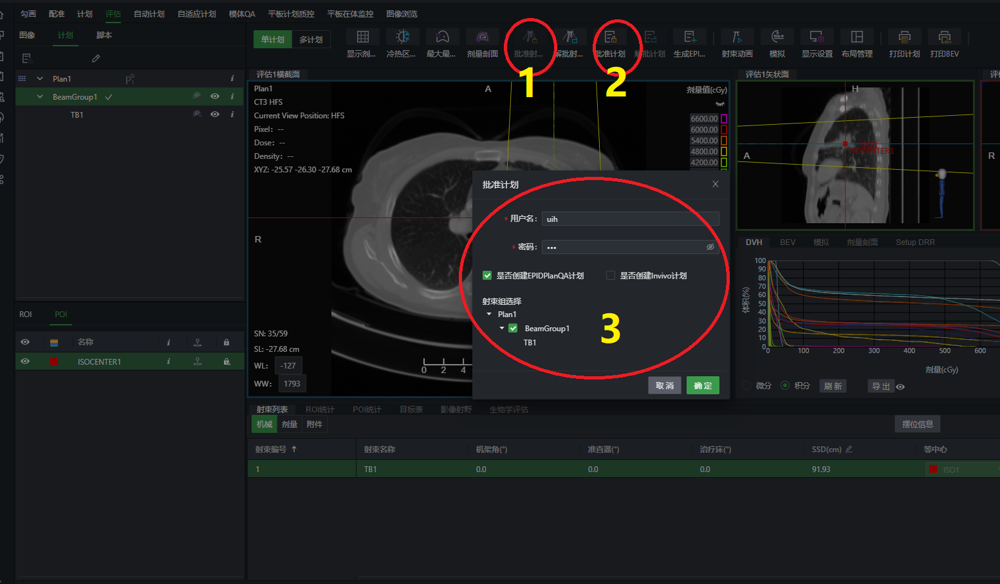
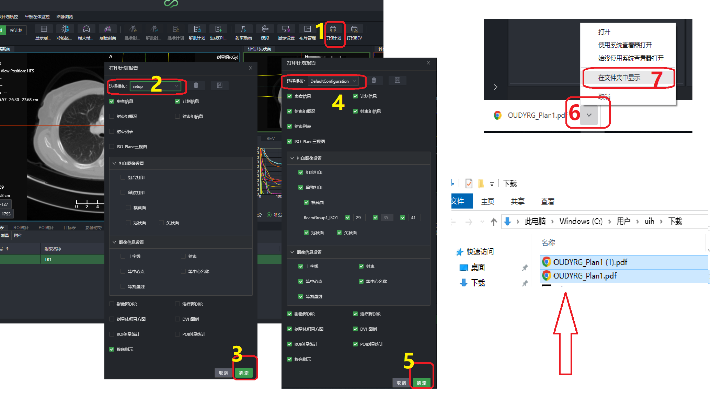

一、环境准备
- 浏览器版本要求： Chrome112
- 系统环境： 16G内存， 院内网环境
- 地址：☞ 10.36.153.120:10010
- 用户名：姓名首字母缩写
- 初始默认密码：2222
流程图
二、导入数据
☞ 详细参考：从服务器导入数据
三、计划前处理
3.1 ☞ 关联电子密度
- 1.选择患者，双击进入勾画界面
- 2.选择CT序列，双击加载图像
- 3.选择电子密度表
3.2 ☞ 加床板
3.3 ☞ 加体位固定附件 Fixation
需要有Body，如图像上没有，画一下：☞工具栏中点“智能分割” ☞其他 ☞选择皮肤/External ☞勾画，然后双击External结构，修改名称为Body
注意检查Body轮廓，把轮廓线修整到图像上的铅点内
用脚本生成Fix结构：

3.4 ☞ 加Mark点(Setup点)
- 把ROI关掉，十字线定位到铅点上
- 在POI栏里点添加POI按钮
- 用基于坐标系的方式，选择角色Setup
- 修改名称，OK

3.5 ☞ 检查处理ROI，画辅助结构
四、计划设计
☞ 4.1 调强计划设计步骤
☞ 4.2 3D-CRT计划步骤
☞ 4.3 uArc优化算法
☞ 4.4 uArc弧度避开设置
☞ 4.5 锁Jaw
☞ 4.6 自动开野 AutoFlash
五、计划评估和批准
☞ 5.1.计划评估
☞ 5.2.计划批准

☞ 5.3.打印报告
- 分别打印这两项

☞ 5.4.截屏打印
- 关闭ROI和POI，跳转到Mark点层面
- 用Win+shift+S组合键选区截屏
- 打开paint画板，粘贴
- 打印成pdf
- 再截图目标表，打印

☞ 5.5.附：调整视窗保存模板，方便下次使用
 |
 |
| 保存图像三视图模板 | 保存目标表模板 |